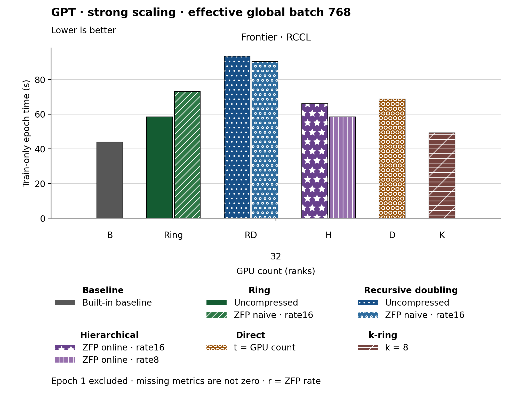

The figure uses bars. Families and methods are identified by text and patterns in addition to color. The metric is Train-only epoch time (s). Frontier · RCCL, GPU count (ranks) 32: Built-in baseline has the lowest plotted value, 43.880. Epoch 1 is excluded. Values are medians; when repeated runs are available the selected repeat policy is median. These are not confidence intervals across repeated jobs. Missing or unrecorded metrics are omitted, not set to zero.
| Panel | GPU count (ranks) | Method | Value | Runs |
|---|---|---|---|---|
| Frontier · RCCL | 32 | none | 43.88 | 1 |
| Frontier · RCCL | 32 | ring | 58.43 | 1 |
| Frontier · RCCL | 32 | ring_zfp_naive:16 | 73.04 | 1 |
| Frontier · RCCL | 32 | recursive_doubling | 93.39 | 1 |
| Frontier · RCCL | 32 | recursive_doubling_zfp_naive:16 | 90.25 | 1 |
| Frontier · RCCL | 32 | hierarchical_zfp_online_coll:8 | 58.51 | 1 |
| Frontier · RCCL | 32 | hierarchical_zfp_online_coll:16 | 65.98 | 1 |
| Frontier · RCCL | 32 | direct_p | 68.67 | 1 |
| Frontier · RCCL | 32 | kring_k8 | 49.22 | 1 |